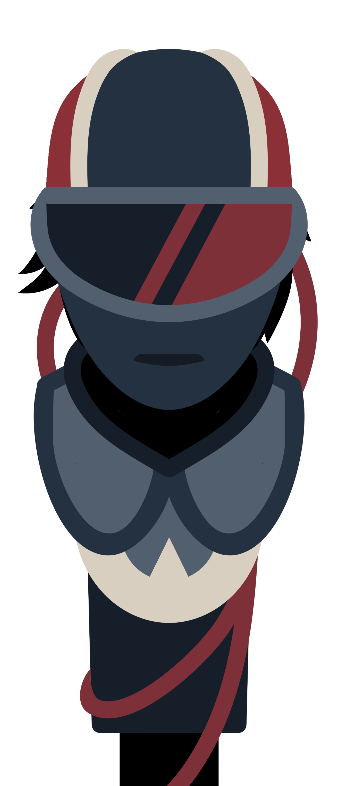

S.D.C (System's Defense Console)
Lore
Built by P.S.U. to manage most, if not all of their automated systems. It is located at the top of the P.S.U. Headquarters. Despite this, it seems oddly... human. P.S.U. refuses to give more information about, or allow anyone close to it.